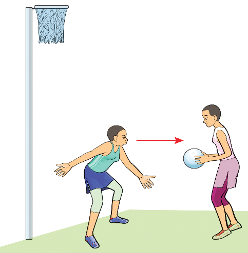
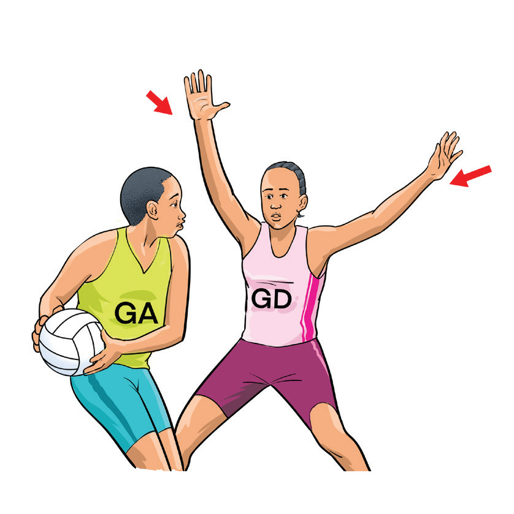

Marking
Marking is a defensive strategy where a player follows and restricts the movement of an opponent to prevent them from receiving the ball or making a pass. Marking helps restrict an opponent’s movement and passing options, as shown in Figure 1.19. To mark effectively, a defender must stay close to their opponent while maintaining an arm’s length distance to apply pressure without committing a foul. Tracking the attacker’s movements and positioning oneself strategically can limit their ability to receive passes or take a shot. Additionally, good body positioning forces the opponent into less dangerous areas of the court, making it harder for them to contribute to the attack.


Intercepting
Interception is the gaining of possession of the ball from the opposition team during a pass. Intercepting requires anticipation and quick reactions to cut off passes before they reach the intended player, as shown in Figure 1.20. A defender must read the game by observing the eyes and body movement of the opponent to predict where the ball will go. Stepping into passing lanes at the right moment or timing a leap effectively increases the chances of a successful interception. Once the ball is intercepted, maintaining balance is crucial for transitioning quickly into an attacking play.